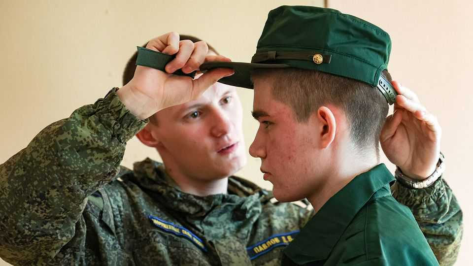

Russian men are fleeing before the army can grab them
Vladimir Putin looks poised for a huge wave of forced inductions

Oct 15th 2026
On september 18th Dmitry, a 35-year old Muscovite working in advertising, cast his vote in Russia’s sham parliamentary elections. He wrote the word “criminal” on his ballot, slid it into the box and headed straight to the airport, where he boarded a flight to Istanbul. He was one of thousands who have left in recent weeks, fearing that the “special electoral procedure”, as some Russians have taken to calling their elections, would pave the way for a new wave of military mobilisation.
When Vladimir Putin declared a partial mobilisation in September 2022, six months after invading Ukraine, 400,000 Russian men fled the country. This time people are leaving even without any announcement, albeit in smaller numbers. On August 18th 20,000 people crossed the land border between Russia and Georgia, about triple the normal daily number. Russian customs officials reported similar numbers on preceding days. In Armenia, another country that lets Russians in without a visa, high demand for rental accommodation has pushed up prices by 30-50% since the spring. “It wasn’t just because of the mobilisation that I left. I’d had enough of putting up with it, of staying in that atmosphere,” says Yuri, who worked for a tourism firm in St Petersburg.
Grigory Sverdlin of Idite Lesom (Get Lost), a volunteer organisation that helps people avoid forced mobilisation, says the number of requests for help it has received this autumn has risen by half compared with spring this year. Anastasia Burakova of Kovcheg (Arc), a group that helps Russians who are opposed to war to emigrate, says enquiries have gone up eight-fold since July. Compared with 2022, “we are now seeing a smaller but better-prepared wave of emigration,” she says.
Rumours of a new wave of mobilisation have circulated for months. Ukrainian officials have predicted a call-up of at least 100,000 men; on September 24th Emmanuel Macron, the French president, put the number at 300,000. Russia’s own military bloggers think it likely too. Officially, the Kremlin says nothing of the sort is being prepared. “That’s utter rubbish. It’s an information attack on Russia,” Mr Putin said shortly before the elections last month.
Yet Russians, hardened by experience, tend to think that the more emphatically authorities deny planning something unpleasant, the more likely it is to happen. In 2022 the Kremlin denied mobilisation was in the works just a week before it was announced. In any case, no official declaration is needed, since the previous order has never been repealed.
The administrative system has been improved over the years, and includes electronic summonses and communication between recruiters and border officers. This summer there were protests in Penza, 600km east of Moscow, after plain-clothed recruiters grabbed people off the streets. To avoid more unrest, the next wave is likely to be covert. Debtors, the unemployed and failing students may be coerced to enlist. Some believe it is already under way. A military lawyer says DNA samples are being collected from every inmate in a prison in Ryazan, the better to identify their corpses at the front.
Recruitment quotas are being sent to regional governors and bosses at large firms, who will have to take responsibility for any discontent, a practice of “decentralisation” that the Kremlin tested during covid. Nikolai Mitrokhin of Bremen University, a sociologist and analyst of the war, says rich regions are, in effect, buying recruits from poorer ones. The sign-up bonus in the wealthy Sverdlovsk region is 3.1m roubles ($37,000), nearly four times that in poorer Syktyvkar, near the Ural mountains. Recruits travel from poorer regions to sign up in richer ones.
Military bloggers and nationalists are eager. On July 30th Rusich, an ultra-nationalist outfit, called for “the mobilisation of half a million men” to achieve Mr Putin’s war aims. Western analysts have long thought a new wave of mobilisation would be risky and might provoke protests, as it did in Penza. Yet in fact mobilisation can be useful to Mr Putin, allowing him to demonstrate control over the system and to bolster his narrative of national sacrifice, which depends on comparing his war to the epochal struggle against Nazi Germany.
There are important military questions to be answered before additional men are sent to the front. The first is whom to mobilise. Younger, fitter and better-educated soldiers would achieve more than the old, poor and desperate ones Russia recruited in previous drives. The North Korean troops who have fought for Russia proved this: Ukrainian soldiers reported them to be markedly more tenacious and capable than Russian infantry. But the North Koreans first had to learn how to fight the new sort of war that has developed in Ukraine. A second question is how much training and equipment Russia’s new soldiers would get.
If Russia treats mobilised soldiers as cannon fodder, as it has in the past, Mr Putin will get little more than caskets. But if the new recruits are up to North Korean standards, the Ukrainians will have more to fear. A big, well-trained new cohort could make a difference to battles in urban terrain, where drones are less effective. Ukraine has recently pioneered innovative tactics, including use of mine-clearing drones and attacks on drone operators’ bunkers, that have helped it take back Russian-held territory. If Russia copies these, then numerical superiority in troops could recover its relevance. The thin screens of drone-supported soldiers that Ukraine uses to hold parts of the front might no longer be enough.
At the moment Russia’s army attracts mainly low-skilled men with few prospects, argues Vladislav Inozemtsev, a Russian economist. It is even more attractive to those who have little desire to live and want to leave something to their families. Soldiers are paid an unimpressive 200,000 roubles a month, much of which is often stolen by their superiors. But there are large sign-up bonuses and a death benefit of 15m roubles for next of kin, more than ten times the average annual income in Russia. To attract recruits more interested in staying alive, the Kremlin might increase monthly payments and reduce the death benefit.
Dmitry does not want to be part of that calculus. He is looking for a job in Istanbul and hoping his wife and child can join him when he is settled. “I want to live in Russia, but without these kinds of risks,” he says. “It’s hard to believe your own state can just suddenly send you off to be slaughtered, but we’ve already seen it happen.” ■